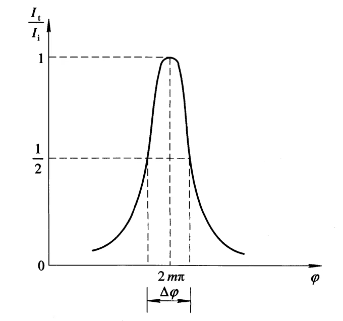

相邻两反射光或透射光间的光程差为：
$$\Delta = 2nh\cos\theta$$其中\(\theta\)为光线从空气到平板的折射角.
相位差 $$\phi = kr = \frac{2\pi}{\lambda}\Delta = \frac{4\pi}{\lambda}nh\cos\theta$$ 爱里公式 $$F = \frac{4R}{(1-R)^2} \propto R$$ $$I_r = \frac{F\sin^2\frac{\phi}{2}}{1 + F\sin^2\frac{\phi}{2}}I_i$$ $$I_t = \frac{1}{1 + F\sin^2\frac{\phi}{2}}I_i$$不考虑吸收和其他损耗的情况下，由于能量守恒定律：
$$I_r + I_t = I_i$$ 等倾性平行平板在透镜焦平面上产生的多光束干涉条纹是等倾干涉条纹.
光强分布| 反射光 | 折射光 | |||
| $$\phi$$ | $$I$$ | $$\phi$$ | $$I$$ | |
| 亮条纹 |
$$\phi = (2m+1)\pi,~m = 0,1,2,\cdots$$
$$I_r = \frac{F\sin^2\frac{\phi}{2}}{1 + F\sin^2\frac{\phi}{2}}I_i$$
由分数的浓度不等式： 当\(F\sin^2\frac{\phi}{2}\)最大时，\(I_r\)最大. $$\sin^2\frac{\phi}{2} = 1\Rightarrow \frac{\phi}{2} = (m+\frac{1}{2})\pi \Rightarrow \phi = (2m+1)\pi(m=0,1,2,\cdots)$$ |
$$I_r = \frac{F}{1+F}I_i$$
$$I_r = \frac{F\sin^2\frac{\phi}{2}}{1+F\sin^2\frac{\phi}{2}}I_i$$
$$\phi = 2m\pi(m=0,\pm1,\pm2,\cdots)$$
$$I_r = \frac{F}{1+F}I_i$$
|
$$\phi = 2m\pi,~m=0,1,2,\cdots$$ | $$I_t = I_i$$ |
| 暗条纹 | $$\phi = 2m\pi,~m=0,1,2,\cdots$$ | $$I_r = 0$$ | $$\phi = (2m+1)\pi,~m=0,1,2,\cdots$$ | $$I_t = \frac{1}{1+F}I_i$$ |
用条纹的半峰值全宽度\(\epsilon = \Delta\phi\)表征干涉条纹的锐度.
\(\phi = 2m\pi\pm\frac{\Delta\phi}{2}\)时：
$$I = \frac{1}{1 + F\sin^2(m\pi \pm \frac{\Delta\phi}{4})}I_i = \frac{1}{2}I_i$$ $$F\sin^2\frac{\phi}{4} = F\sin^2\frac{\epsilon}{4} = 1$$当\(F\)很大（即\(R\)很大）时，\(\epsilon\)一定很小，有\(\sin\frac{\epsilon}{4} \approx \frac{\epsilon}{4}\).
$$F\frac{\epsilon^2}{16} = 1$$ $$\epsilon = \frac{4}{\sqrt{F}} = \frac{2(1-R)}{\sqrt{R}}$$\(R\)越大，\(\epsilon\)越小，条纹越尖锐.
用相邻两条纹间的相位差\(2\pi\)与条纹半宽度\(\epsilon\)之比\(N\)表征条纹的锐度.
$$N = \frac{2\pi}{\epsilon} = \frac{\pi\sqrt{F}}{2} = \frac{\pi\sqrt{R}}{1-R}$$\(R\)越大，\(N\)越大，条纹越尖锐.
在平行平板的结构\((n,h)\)确定，入射光方向一定的情况下，相位差\(\phi\)仅与波长\(\lambda\)有关，只有使\(\phi = 2m\pi\)的光波长才能最大地透过该平行平板.
$$\phi = \frac{4\pi}{c}nh\nu\cos\theta$$ 滤波带宽相应于条纹半宽度\(\Delta\phi\)的频率范围\(\Delta \nu_{1/2}\)称为滤波带宽：
$$\Delta\nu_{1/2} = \frac{\Delta\phi}{\frac{4\pi}{c}nh\cos\theta} = \frac{c(1-R)}{2\pi nh\sqrt{R}\cos\theta}$$ $$\nu_m = c/\lambda_m$$ $$\mathrm{d}\nu_m = -\frac{c}{\lambda^2_m}\mathrm{d}\lambda_m$$ $$|\Delta \nu_m| = \frac{c}{\lambda^2_m}\Delta\lambda_m$$ $$m\lambda_m = 2nh\cos\theta$$ $$\lambda_m = \frac{2nh\cos\theta}{m}$$ 透射带的波长宽度 $$(\Delta\lambda_m)_{1/2} = \frac{2(1-R)nh\cos\theta}{m^2\pi\sqrt{R}} = \frac{\Delta}{m^2N} = \frac{\lambda_m}{mN}$$\(R\)越大，\(N\)越大，\((\Delta \lambda_{1/2})\)越小.
Bottom